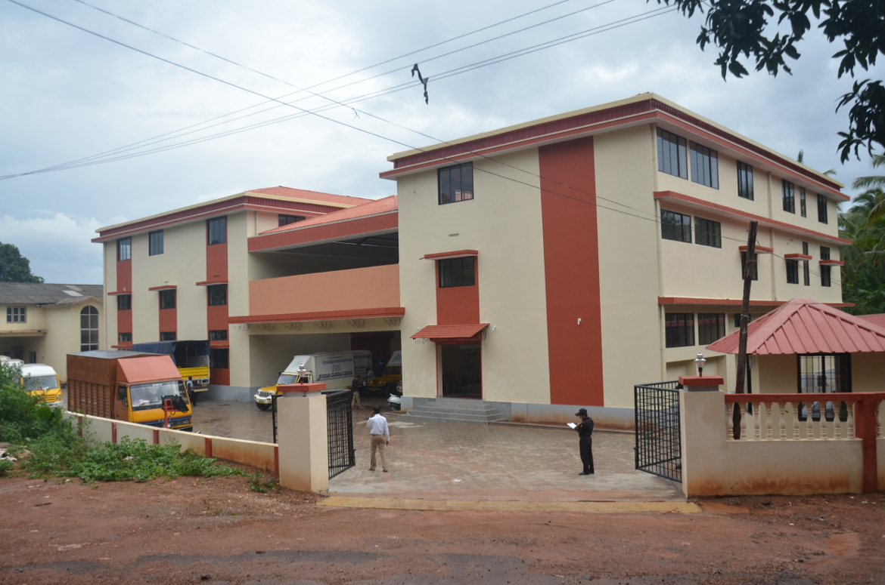

Apex Level Infrastructure
Developing ideal infrastructure both at the Apex Level and at the Cluster
Level is one of the major components of this project. The Apex Level
Infrastructure is the hub center for all Swarojgaries, which has come up at
Belthangady Taluq, Dakshina Kannada district.
The Cluster Level common facility center to take up various non-farm sector
activities is another special feature of SGSY Special Project.An Apex level
common facility center built in a sprawling 2.2-acre campus has become a
State Level Resource Center for the Swarojgaries. The center is organizing
the backward and forward linkages, create raw material bank and provide
storage facilities for finished goods for the benefit of the Swarojgaries.
This is also acting as a hubcenter for Swarojgaries from distant places,
to acquire information, training and develop skill on various income
generation activities. This center has been planned in such a way that
once a Swarojgari enters this building he will get complete information
pertaining to his venture.
The centre has amenities such as a full fledged training centre, godowns,
storehouses, library, laboratories etc.
Bhoruka – SKDRDP Center for Rural Excellence (CRE)
The Swarna Jayanthi Gram Swarojgar Yojana Programme has offered much opportunities
for the rural poor to venture in to various income generation activities. The SHG
concept and group enterprises appproach Swarna Jayanthi Gram Swarojgar Yojana
Programme. The much required credit support is now available to the rural women
through her SHG or through the government subsidy programme.
However in-spite of the availability of credit, the rural poor community is unable
to take up variable self-employment ventures for want of proper information on
the activities, necessary skills, capacities for up-scaling and entrepreneurial
skills. To eliminate these drawbacks, the Center for Rural Excellence (CRE) has
been setup by SKDRDP in collaboration with M/s Bhoruka Charities. The
organization's name is Bhoruka – SKDRDP Center for Rural Excellence (CRE).
The organization focuses on training which is an very important support for
taking up self-ventures.
Objectives of CRE
- To identify the group enterprises in the farm and non-farm sector suitable
for setting up profitable self–employment venture.
- To provide very short duration skill based training on various ventures.
- To provide the necessary skill up gradation trainings for converting the
knowledge to skill and skill to craft.
- To provide the necessary value addition training to the existing group enterprises.
- To establish a data bank/ documentation center for rural development.
- To publish 'newsletters' for disseminating information based on rural development.
- To provide inputs on various entrepreneurial aspects to the group enterprises.
- To design and execute various capacity building programmes for the staff of
NGO's and to facilitate, coordinate with various developmental institutions/research
institutions in conducting various structured programmes.
- To design and execute various training programmes based on the need
for external institutions.
- To organise courses for rural development workers, bankers, govt. officials
and others on rural enterprises, rural problems, rural problems, rural
development activities, etc.
- To conduct research and extension on farm and off farm sector rural enterprise,
living environment including health, hygiene, housing electricity and the like.
- To conduct programmes on conservation of soil, water and the like.
SGSY Resource Center (RC) :
SGSY Resource Center will take care of the 'incubation' facility and all the ancillary
facilities. This center will also give backup support to test the raw material and
finished goods and also to get information on latest technologies.
- To provide incubator facilities for various enterprises by establishing the
required laboratories for chemical analysis, processing of raw materials, finished
goods in the chemical and the foods sector.
- Providing technical services to the group enterprises including the recipe,
formulae, and designs for taking up enterprises.
- Providing the information on environment with special reference to the linkages,
value additions including raw material, manufacturing, packaging and marketing.
- Provide the groups, an opportunity for bulk purchase of raw materials by
establishing a Raw Material Bank.
- Provide the groups on outlet for their products by providing the godowns and cold stores.
- To facilitate capacity building of the groups by arranging the field visit/ exposure visits.
- To act as a hub centre for group Swarojgaries of the State of Karnataka and outside for
arranging exposure to these groups on various group enterprises being promoted
by ‘SKDRDP and SGSY Special Project'.